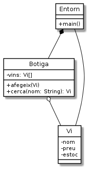

El celler de la Bona Estrella¶
La senyora Estrella d’Argent és propietària d’una reconeguda botiga de vi de la ciutat, especialitzada en vins de taula catalans. El celler es diu La Bona Estrella però tothom la coneix com «Ca l’Estrella».
Fins ara, els clients arribaven a la botiga i li descrivien les característiques desitjades del vi cercat. La Sra. Estrella se’ls escoltava amb atenció, feia alguna pregunta per acabar de fer-se la idea i desapareixia per la porta que donava a la rebotiga, per reaparèixer poc més tard, quasi bé sempre, amb una o més ampolles que satisfeien els desitjos dels seus clients.
El temps passa per tothom, però, i ja la Sra. Estrella comença a fer-se gran. Entre d’altres coses, li comença a costar pujar pes. Per aquesta raó, i per tenir-lo ocupat en alguna cosa de profit, el Tomet, el nebot menys eixerit de la Sra. Estrella, li ajuda amb algunes tasques. Entre d’altres, col·loca les ampolles al magatzem i cuida del gat Renat, qui es suposa que manté el celler lliure de ratolins. Tot i que el Tomet no ho fa del tot malament, el seu ajut presenta un problema a la tieta, doncs ara a la Sra. Estrella ja no se li queda al cap on para cada ampolla de vi quan el client li demana.
Durant un sopar familiar, la germana petita de la Sra Estrella, la Gualda, ha comentat que coneix un equip de desenvolupadors molt trempats (nosaltres) que li podrien fer una aplicació a mida per ajudar-la amb els estocs de vi.
Un cop analitzat el problema, el nostre equip ha arribat a un primer disseny de l’aplicació, que hem representat amb el següent diagrama de classes:

La nostra aplicació s’executarà a partir d’un entorn operatiu
anomenat Entorn que permetrà fer diferents gestions sobre la botiga de
vins, com ara cercar un vi i afegir-ne de nous.
La classe Botiga se n’encarregarà de gestionar la col·lecció de vins
que hi ha a la botiga, i oferirà mètodes per poder saber si un vi es troba
a la botiga, accedir al vi en concret, afegir-ne de nous, etc.
Finalment la classe Vi se n’encarregarà de gestionar la informació
d’un vi en concret, el preu i l’estoc (nombre d’ampolles) disponible.
Tot plegat és un primer disseny que li mostrem a la Sra. Estrella després de convidar-nos a unes tapes regades amb un vi massa bo com per que puguem estar segurs d’haver entès del tot les necessitats de la nostra clienta.
Passem tot seguit a implementar-ho de manera que puguem presentar-li un prototip el més aviat possible.